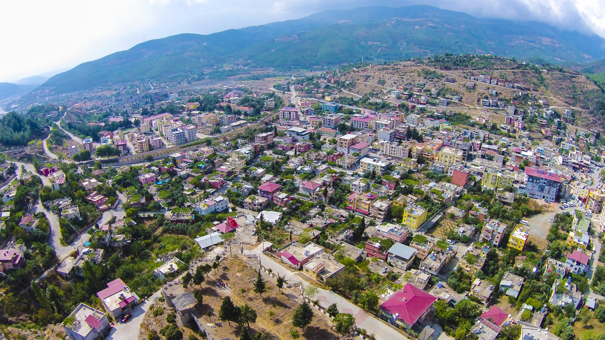

Bahçe

BAHÇE İLÇE TARİHİ:
Antik Çağda Kilikya Bölgesi içerisinde yer alan Bahçe MÖ.1000'lerde Kargamış Hitit Krallığının sınırları içerisinde olup, bir kale kalıntısı üzerinde kurulmuştur. MÖ.XIV. yüzyılda Hititlerin egemenliği altında olup, Hitit Federasyonu'ndan Kızvatna Krallığının toprakları içerisinde idi. Asurlular bir süre bölgeyi egemenlikleri altına almışlarsa da sonunda Kilikyalılar onlara karşı ayaklanmışlardır. MÖ.VI. yüzyılın ortalarında Kilikya Bölgesi ile birlikte Perslerin eline geçmiş ancak, MÖ.333 yılında Büyük İskender'in Pers İmparatoru Darius'u yenmesinden sonra yöre Makedonyalıların egemenliğine geçmiştir. Büyük İskender İmparatorluğu'nun parçalanmasından sonra Çukurova ile birlikte Bahçe yöresi de Seleukosların payına düşmüştür. Ardından Romalıların egemenliğine girmiştir. İmparator Hadrianus MS.120-135 yıllarında Çukurova bölgesine önem vermiş ve burasını önemli bir ticaret merkezi haline getirmiştir. MS.395'de Roma'nın ikiye ayrılmasından sonra Adana ile birlikte, Doğu Roma'nın (Bizans)yönetimine girmiştir. Bizans hakimiyeti VII. yüzyıl ortalarına kadar devam etmiştir. Abbâsilerle, Araplar bu bölgeye akınlar düzenlemişler ve kısa bir süre sonra 965 yılında Bizanslılar yöreye yeniden egemen olmuşlardır. Malazgirt Savaşı'ndan (1071) sonra Türkmen boylarından bazıları yöreye yerleşmişler, Anadolu Selçuklu Devleti'nin yıkılmasından sonra 1335'te Ramazanoğulları Beyliğinin eline geçmiştir. 1336 yılında Memlûklular bölgeyi hâkimiyetleri altına almışlardır. 1378 yılında Ramazanoğulları Beyliği döneminde bölgede ziraat ve hayvancılık yeniden gelişmiş, kent ve yollar îmar edilmiştir. Yavuz Sultan Selim'in Mısır Seferi sırasında Osmanlı topraklarına katılmıştır. Kanuni Sultan Süleyman'dan sonra yörede huzursuzluklar ve yönetimde boşluklar yaşanmış, bu durum XVIII. yüzyıldan sonra daha da kötüye gitmiştir. Yöredeki aşiretler köylere baskınlar düzenleyerek köyleri yağmalamışlardır. Bunun üzerine halk köylerini ve tarlalarını bırakarak dağ yamaçlarına çekilmiştir. I. Dünya Savaşı sırasında bu karmaşa kendisini daha çok hissettirmiştir. Bunun üzerine 1866 yılında Fırka-i İslâhiye bölgede düzenlemeler yapmış ve Bahçe'yi Halep vilayetinin Maraş sancağına bağlı bir kaza yapılmıştır. Ardından da 1878'de Adana Vilayetinin Cebel-i Bereket (Osmaniye) Sancağına bağlanmıştır. I. Dünya Savaşı'ndan sonraki yıllarda Çukurova yöresini Fransızlar işgal etmiştir. Bu arada Bahçe bir süre için boşaltılmıştır. Çukurova'da başlayan direniş hareketleri sonucunda bölgede çete harbi başlamış, 1921'de Kuvayı Milliye'nin direnişi karşısında Fransızlar zor durumda kalmışlar, bunun sonucu olarak da 20 Ekim 1921'de Yeni Türkiye Cumhuriyeti ile yapılan Ankara Antlaşması ile bölgeyi terk etmişlerdir. Cumhuriyetin ilanından sonra; Çukurova yöresi ve Bahçe yeniden imar edilmiş, 1933'te belediye teşkilatı kurulmuş, ve Adana'ya bağlı ilçe konumuna getirilmiştir. Osmaniye'nin 1996'da il olması üzerine de Adana'dan ayrılarak Osmaniye'ye bağlanmış ve kendisine bağlı olan Hasanbeyli yeni ilçe olmuştur. a)Sanayi: İlçe Merkezinde faaliyette bulunan Gökçedağ Rüzgâr Enerji Santralinde 54 tribün bulunmaktadır. Bir tribün 2,5 (MW) gücünde olup, bir saatlik üretim toplamı 135 (MW)’ dir. Ayrıca Sarıtepe Demirciler Rüzgar Enerji Santralinde ise 31 adet tribün bulunmakta olup, kurulu gücü 80.3 (MW) ’ dir. ABC Kimya Sanayi Anonim Şirketi gerek iç piyasaya gerekse ihracata yönelik deterjan hammaddesi ve deterjan üretmektedir. Barit Maden Türk Anonim Şirketi boraks üretimi yapmaktadır. Ayranöz Doğal Kaynak Suyu, Ayran Su Doğal kaynak Suyu, Bağcı Su Doğal Kaynak Suyu, Bahçe Pınar Doğal Kaynak Suyu, Gökçedağ Ayran Su Doğal Kaynak Suyu, İdeal Doğal Mineralli Kaynak Suyu, Max Pure Doğal Kaynak Suyu şişeleme tesisleri üretimlerini sürdürmektedir. 78 ortaklı Küçük Sanayi Sitesinde 78 işyeri bulunmaktadır. 61 iş yeri üretime geçmiş ve 90 kişinin istihdamı sağlanmıştır. 17 işyeri ise boş durumdadır.
EKONOMİK DURUMU:
Bankalar: İlçemiz merkezinde T. C. Ziraat Bankası mevcuttur. Ayrıca; İş Bankası, Akbank, Garanti Bankası, Denizbank, Vakıfbank ve Finansbank, Türkiye Ekonomi Bankası’nın ATM’leri ilçemizde bulunarak, halkımıza hizmet vermektedir Romalılar döneminde FLAVİOPOLİS adı ile görkemli bir kent olan Kadirli, 1515 yılında Osmanlı padişahı Yavuz Sultan Selim tarafından Osmanlı topraklarına katılmıştır. Osmanlı döneminde Maraş beylerbeyliğine bağlı bir sancak (Kars-i Zülkadriye) olan Kadirli de, 1865 de ilçe,1872 yılında da belediye kurulmuştur. Şehre Osmanlı döneminde, “PAZARYERİ” ve “KARSPAZARI” gibi değişik adlar verilmiş olup İlçe 1928 yılında Kadirli adını almıştır. I.Dünya savaşı sonunda 14 mart 1919 yılında ermeni ve Fransızlar tarafından işgal edilmiş olan ilçemiz,7 Mart 1920 de düşman işgalinden kurtulmuştur.
Sayfa Geri Dön